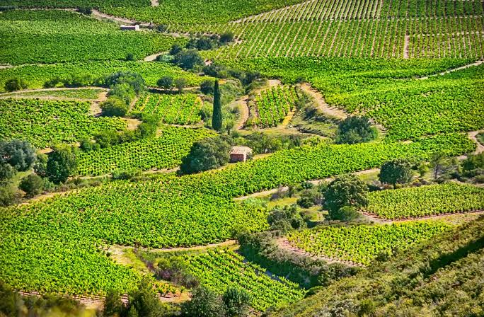

Vignobles en
terrasses des
Corbières


⟹ Vignobles & Terroir ⟸
La culture de la vigne dans le massif des Corbières remonte à près de 2 500 ans, introduite par les marchands grecs puis développée sous la domination romaine, au point que les vins de la Narbonnaise trouvèrent le chemin de Rome elle-même. Après le déclin consécutif à la chute de l'Empire, ce sont les moines bénédictins et cisterciens qui, entre le VIIe et le XIIe siècle, redonnèrent au vignoble sa prospérité, autour des abbayes de Lagrasse et de Fontfroide.

Étagé entre le niveau de la mer et 400 mètres d'altitude sur près de 60 kilomètres d'ouest en est, le vignoble épouse des reliefs contrastés : plages sableuses du littoral, plaines caillouteuses autour de Lézignan, puis calcaires et schistes arides des Hautes Corbières. Sur les pentes les plus abruptes, les vignes sont plantées en terrasses, exposées au soleil et balayées par la tramontane.
Reconnue AOC en 1985, l'appellation Corbières est aujourd'hui la plus vaste du Languedoc, avec près de 1 300 vignerons cultivant syrah, grenache, carignan et mourvèdre pour les rouges, aux côtés de cépages blancs comme la roussanne ou le vermentino. Le paysage, ponctué de villages de pierre et dominé au loin par les silhouettes des châteaux cathares, forme l'un des panoramas viticoles les plus caractéristiques de l'Aude.
Après la crise du phylloxéra qui dévasta le vignoble au XIXe siècle, la reconstitution progressive sur plants américains résistants a permis aux Corbières de retrouver, au XXe siècle, leur vocation de grand vignoble méditerranéen.
L’INAO et le syndicat de l’appellation font remonter l’introduction de la vigne dans les Corbières au IIe siècle avant notre ère, avant un fort développement à l’époque romaine. Les abbayes de Lagrasse et de Fontfroide participent ensuite au maintien et au renouveau de la viticulture médiévale.
Schistes anciens, calcaires, grès, marnes, argilo-calcaires et terrasses caillouteuses se succèdent sur un relief très compartimenté. À cette diversité des sols s’ajoutent les influences méditerranéennes, océaniques et d’altitude, ainsi que la tramontane : autant de facteurs qui expliquent la mosaïque des paysages et des styles de vins.
L’AOC Corbières a été reconnue par décret le 24 décembre 1985. L’aire de production s’étend sur 87 communes de l’Aude. Les rouges dominent très largement la production ; les principaux cépages rouges sont le carignan, la syrah, le grenache et le mourvèdre, tandis que les blancs font notamment appel au grenache blanc, à la roussanne, au vermentino, à la marsanne, au macabeu et au bourboulenc.
Le syndicat de l’appellation travaille à la reconnaissance de dénominations géographiques complémentaires pour plusieurs secteurs : Terrasses de Lézignan, Montagne d’Alaric, Lagrasse, Corbières-Durban et Port Mahon. Cette démarche met en lumière les différences de sols, d’exposition et de microclimat à l’intérieur de l’appellation.
Abbaye de Lagrasse : abbaye bénédictine médiévale au cœur des Corbières centrales
Château de Quéribus : forteresse cathare dominant le vignoble depuis 728 m d'altitude
Lézignan-Corbières : capitale viticole et point de départ de la route des vins
Narbonne : cité antique et gastronomique, à la porte du vignoble littoral